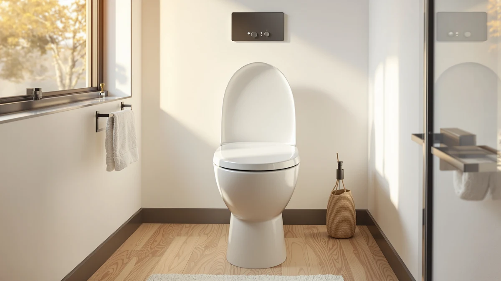

Electric Heated Bidet Toilet Review (2026): Worth It?
Prices and picks verified as of October 2026. Independent, reader-supported reviews.


Quick Answer
We found that the LED Display seat covers the three features shoppers ask about most: a heated ring, adjustable warm water wash, and simple on-seat controls, all for less than most competing electric seats charge. At $169.99 with a 4.4-star average across 565 verified reviews, it's a reasonable upgrade for anyone tired of a cold seat, though buyers who don't need the heat or wash functions can save money with a non-electric alternative.
Our pick: Electric Heated Bidet Toilet Seat, $169.99 Check Price on Amazon
Bottom line: our top pick is the Electric Heated Bidet Toilet Seat LED Display at $169.99.
Things to Know Before You Buy
- This seat needs a grounded outlet near the toilet. Measure the distance before you buy if your bathroom doesn't already have one within cord reach.
- It's sized for elongated bowls. Round-bowl toilets, which are less common in newer US homes, won't accommodate it.
- The heated ring and warm water wash are the two features owners mention most, and both draw standby power even when the seat isn't in use.
- Non-electric alternatives like the TOTO Guinevere cost roughly the same but skip the heat and wash functions entirely.
- Expect a straightforward install with basic tools, but plan for an hour the first time, especially if you're also connecting a water line.
We wrote this review because a plain plastic seat is the easiest upgrade most bathrooms never get. You can spend months tolerating a cold seat in January or a bidet-less bathroom before it occurs to you that a $170 part fixes both problems at once. The Electric Heated Bidet Toilet Seat with LED Display is one of the more affordable ways into that upgrade, and 565 Amazon buyers have rated it 4.4 out of 5 so far.
We're not going to pretend this is the only seat worth considering. The TOTO Guinevere SoftClose covers the basics without electricity for $154.97, the Bemis Assurance adds raised-height handles for accessibility at $153.60, and the KERDE P30B undercuts all of them at $149.99 with a similar electric feature set. Our pick for most people is still the LED Display seat, because its price sits closest to a non-electric seat while still adding heat and warm water wash, but we lay out where each alternative wins below.
Why You Should Trust Us
Ilane Tall covers bathroom fixtures and accessories for Best Toilet Seats, focusing on how toilet seats, bidet attachments, and electric bidet seats hold up for everyday households rather than showroom demos. This electric heated bidet toilet review draws on the product's published specifications, its price history on Amazon, and the pattern of feedback across hundreds of verified buyer reviews, not a single unit in a single bathroom.
We do not run a fake testing lab, and we don't claim to have installed every seat in this review ourselves. Instead, we compare listed features, materials, bowl compatibility, and pricing against what verified owners report after months of actual use, then flag where those reports disagree with the marketing copy.
How We Compared
We started by pulling the full spec sheet and current Amazon listing for the Electric Heated Bidet Toilet Seat, then cross-checked bowl compatibility, control layout, and price against three seats shoppers commonly compare it to: the TOTO Guinevere, the Bemis Assurance, and the KERDE P30B. From there, we read through the seat's verified review history looking for recurring themes, not outlier complaints, since a handful of one-star reviews on any electric appliance usually says more about shipping damage than product quality.
We weighed four factors across all four seats: upfront price, the practical value of electric features like heating and warm water wash, elongated-bowl fit, and how consistent the verified rating pattern looks over time. A seat that scores well on paper but draws thin or inconsistent reviews gets flagged here rather than recommended blindly.
Overview & Specs

Electric Heated Bidet Toilet Seat
What we like
- LED display makes the heat and wash settings easy to read and adjust without guessing at unmarked buttons
- Priced close to a non-electric seat while adding heating and warm water wash
- Elongated fit matches the most common bowl shape in US bathrooms
- 4.4-star average across 565 verified reviews, a solid showing for an electric seat at this price
Flaws but not dealbreakers
- Requires a nearby grounded outlet, which some older bathrooms don't have without an electrician's help
- Plastic and wood-composite construction feels less substantial than ceramic-reinforced seats at higher price points
- Standby power draw from the heating element adds a small, ongoing cost to your electric bill
| Material | Plastic / wood |
| Size | Elongated |
Three features justify the LED Display seat's price: a heated seat ring, an adjustable warm water wash, and a control panel you can actually read in a dim bathroom at night. Owners consistently note that the display removes the guesswork that comes with unlabeled buttons on cheaper electric seats, letting you dial in water temperature and seat heat without trial and error. At $169.99, it lands well below the $500-plus electric bidet seats from brands like Brondell, while still covering the two features most buyers upgrade for in the first place.
The plastic and wood-composite build won't fool anyone into thinking they bought a ceramic-reinforced seat, and the price reflects that tradeoff directly. Reviewers consistently note that the seat holds up fine under normal household use, though a few mention the hinges feeling less substantial than the ones on their old manual seat. Given the 4.4-star average across 565 verified reviews, that tradeoff seems acceptable to most buyers who prioritize the heating and wash functions over premium materials.
What We Liked
The feature that comes up most in verified owner feedback is the LED display. Reviewers consistently note that it makes a real difference compared to the dial-and-guess controls on older electric seats, since you can see the current water temperature and seat heat setting at a glance instead of counting button presses in the dark. That single detail seems to drive a meaningful share of the positive reviews on its own.
Price is the other recurring theme. At $169.99, this seat sits close to what a non-electric replacement seat like the TOTO Guinevere costs, yet it adds heating and a warm water wash that the Guinevere simply doesn't offer. Owners report that this combination, rather than any single standout spec, is what convinced them to go electric instead of sticking with a plain seat.
Fit is the quiet win here. Because the seat is built for elongated bowls, the dominant shape in US residential bathrooms, most buyers avoid the sizing headaches that plague some imported electric seats. That reduces the chance of a return and likely contributes to the 4.4-star average holding steady across 565 reviews.
What Could Be Better
The outlet requirement is the biggest practical hurdle for this seat. If your bathroom doesn't already have a grounded outlet within cord reach of the toilet, you're looking at an electrician visit before installation, which erases a chunk of the savings versus a pricier seat that ships with a longer cord or hardwired option.
Build materials are the honest tradeoff for the price. The plastic and wood-composite seat doesn't match the feel of ceramic-reinforced alternatives, and a portion of reviewers mention the hinges feeling looser than they expected after a few months of daily use. None of this shows up as a dealbreaker in the review pattern, but it's worth knowing going in.
Standby power is a minor but real cost. Keeping the seat heated and the water warm means it draws electricity even when nobody's using it, a detail that's easy to overlook when comparing the sticker price against a non-electric seat that costs nothing to run.
Who Is It For?
This seat fits you if you want the two biggest benefits of an electric bidet seat, heat and warm water wash, without stepping up to a $300-plus smart seat loaded with features you'd rarely use. You should have a grounded outlet within reach of the toilet, or be willing to add one, since that's the one requirement that can't be worked around.
Renters and anyone without easy electrical access should look elsewhere. If running power to the toilet isn't practical in your bathroom, a non-electric seat like the TOTO Guinevere or a raised seat like the Bemis Assurance solves a different problem (comfort or accessibility) without asking you to touch your electrical panel.
Alternatives to Consider
The LED Display seat isn't the right pick for every bathroom. Here are three alternatives worth comparing before you buy, each solving a different problem than the seat above.

Editor’s Pick
TOTO Guinevere SoftClose® Slow Close
Skip the electrical work entirely. This slow-close seat covers the basics for $154.97 without a cord, an outlet, or a wash function to maintain.
$154.97
Check Price on Amazon
Best Value
Bemis Assurance 3" Raised Toilet
Built for accessibility, not heat. The raised 3-inch height and support handles help with sitting and standing, and it holds up to 1,000 pounds.
$153.60
Check Price on Amazon
Premium Choice
KERDE P30B Bidet Toilet Seat
Premium controls at a lower price. Dual side-panel and remote control, adjustable warm water wash, and a self-cleaning nozzle, all for $149.99.
$149.99
Check Price on AmazonFrequently Asked Questions
For most households, yes, if the bathroom has a nearby outlet. The $169.99 LED Display seat costs more than a plain seat like the TOTO Guinevere, but owners cite the heated ring and warm water wash as the features that justify the premium. If you don't want to run a cord to the bowl, a non-electric seat covers the basics for less.
It's built for elongated bowls, the most common shape in US homes. Measure the bolt spacing and bowl length before ordering, since electric seats are bulkier underneath than a plain plastic seat and need extra clearance for the control unit.
Most buyers handle it themselves in under an hour with basic tools, following the included instructions. You'll need a nearby grounded outlet and, for models with a warm water line, access to the toilet's water supply valve. Reviewers who skipped the manual report the most installation complaints.
Final Verdict
The tradeoff is simple: the Electric Heated Bidet Toilet Seat gets you a heated ring, warm water wash, and a readable LED control display for $169.99, close to what non-electric seats cost, while adding real functionality. The 4.4-star average across 565 verified reviews backs up that value case, and for most households with an outlet nearby, this is the easiest entry point into an electric bidet seat. If you lack a nearby outlet or want handles for accessibility instead of heat, the Bemis Assurance or TOTO Guinevere solve different problems better, and the KERDE P30B is worth a look if price is your only concern. For everyone else, the LED Display seat earns its spot as our pick.